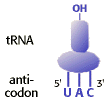

Nucleic Acids and the Genetic Material Problem Set 1
Problem 14: Codon-anticodon base pairing
|  | With what mRNA codon would the tRNA in the diagram be able to form a codon-anticodon base pairing interaction? |
Codons
The codon is a sequence of three bases on mRNA that determines an amino acid. The anticodon is a sequence of tRNA that is complementary to the codon. For the problem, first write the antiparallel sequence for the codon based on the tRNA anticodon. In this example, the anticodon is 5'UAC. Thus, the codon would be 3'AUG which is identical to answer 1 or 3'-AUG-5'.


University of Arizona
Sunday, September 29, 1996
Contact the Development Team
http://biology.arizona.edu
All contents copyright © 1996. All rights reserved.